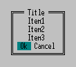

int WINAPI Message( int PluginNumber, DWORD Flags, const char *HelpTopic, const char * const *Items, int ItemsNumber, int ButtonsNumber );
| Flag | Description |
|---|---|
| FMSG_WARNING | Warning message colors are used (white text on red background by default). |
| FMSG_ERRORTYPE | If error type returned by GetLastError is known to FAR or Windows, the error description will be shown in the first message line. In that case, the text given by the plugin will be displayed below the error description. |
| FMSG_KEEPBACKGROUND | Do not redraw the message background. |
| FMSG_DOWN | Display the message two lines lower than usual. |
| FMSG_LEFTALIGN | Left align the message lines instead of centering them. |
| FMSG_ALLINONE |
In this case the Items parameter is not an array of string pointers.
Instead it points to a single string in which the lines of the
message are separated by the newline character '\n'.
Minimal number of lines is - 2 - a title and one message line. If this flag is specified the ItemsNumber parameter is ignored and the number of lines shown is calculated automatically (taking into account the button flags -FMSG_MB_*). To suppress title output when this flag is specified, start the line with a
|
| FMSG_MB_OK | Additional button: <Ok> |
| FMSG_MB_OKCANCEL | Additional buttons: <Ok> and <Cancel> |
| FMSG_MB_ABORTRETRYIGNORE | Additional buttons: <Abort>, <Retry> and <Ignore> |
| FMSG_MB_YESNO | Additional buttons: <Yes> and <No> |
| FMSG_MB_YESNOCANCEL | Additional buttons: <Yes>, <No> and <Cancel> |
| FMSG_MB_RETRYCANCEL | Additional buttons: <Retry> and <Cancel> |
NULL if help is not used.
NULL or the total number of items is less than 2, the
message is not shown.
Info.Message(Info.ModuleNumber, FMSG_ALLINONE|FMSG_MB_OKCANCEL, "HelpTopic", (const char * const *)"Title\nItem1\nItem2\nItem3", 0,0);or const char *Msg="Title\nItem1\nItem2\nItem3\nOk\nCancel"; Info.Message(Info.ModuleNumber, FMSG_ALLINONE, "HelpTopic", (const char * const *)Msg, 0,2); |
 |
BOOL IsDeleted(char *filename)
{
const char *Msg[5];
Msg[0]=GetMsg(MTitle); // message title
Msg[1]=GetMsg(MIsDeleted); // message body
Msg[2]=filename;
Msg[3]=GetMsg(MDelete); // last ButtonsNumber (2) strings are buttons
Msg[4]=GetMsg(MCancel);
return Info.Message(Info.ModuleNumber,
0,
"DeleteFile",
Msg,
sizeof(Msg)/sizeof(Msg[0]),
2) == 0;
}
Info is defined as a global variable:
struct PluginStartupInfo Info;...and is initialized in the SetStartupInfo function:
void WINAPI _export SetStartupInfo(struct PluginStartupInfo *Info)
{
...
::Info=*Info;
...
}